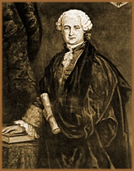

O lendário Conde de Saint
Germain é um dos personagens mais intrigantes do século
XVIII. Sua vida pode ser avaliada sob vários pontos de
vista, desde a condição de um elevado e sábio
alquimista até a de um simples e nobre excêntrico.
O
Conde Saint Germain teria nascido na Transilvânia, em 28
de maio de 1696; mas, outra fontes determinam seu nascimento em
1709. Era, provavelmente, filho de Francis II Rákóczi,
príncipe exilado da Transilvânia. Mas, há
referências de que poderia ser filho ilegítimo de
Marie-Ann de Neuborg, esposa viúva de Carlos II da Espanha,
com o desconhecido Conde Adanero.
Sabe-se que o Conde Saint Germain
teve sua educação acadêmica na Itália,
sob os cuidados do Duque de Médici. Mas, estranhamente,
os primeiros registros de sua vida pública e social iniciam-se
apenas em 1743, quando então contava 47 anos de idade,
na cidade de Londres. Aproximadamente dois anos mais tarde, esteve
na cidade de Edimburgo (Escócia) onde teria sido retido
sob a acusação de espionagem. Após recuperar
a liberdade, conheceu o célebre filósofo e escritor
suíço Jean-Jacques Rousseau, desaparecendo misteriosamente
em 1746.
Em 1758, na cidade francesa de
Versalhes, retomou sua vida pública e convívio social.
Porém, o Conde declarava-se um profissional de pedras preciosas
(ourives e lapidador) e comerciante de tecidos que, segundo a
lenda, possuíam uma fórmula misteriosa e nunca desbotavam.
Neste mesmo período, infiltrou-se
na corte francesa ao presentear com diamante e pedras preciosas.
Conta-se que conquistou a confiança do monarca ao reconstituir,
de modo misterioso, um diamante quebrado. Ainda, ganhou fama de
ser um hábil violinista. Assim, aproveitando-se dos benefícios
que sua popularidade lhe trazia, hospedou-se no vilarejo de Chambord,
sob a tutela do Rei Luís XV.
No ano de 1760, deixa a França
e viaja para a Inglaterra, Países Baixos e Rússia.
Neste momento, na Rússia, o Conde Saint Germain é
acusado de conspirar contra o imperador e a favor de Catarina
– A Grande, de modo que ela pudesse assumir o comando do
estado russo. Em seguida, viaja para a Bélgica, onde, sob
o nome de Conde de Surmount, adquire terras. Neste momento, o
Conde oferece suas técnicas de tratamento de material ao
governo belga; mas, sem obter sucesso. Porém, durante as
negociações, o Conde Saint Germain, supostamente,
transformou ferro em um material semelhante ao ouro, como uma
forma de provar sua capacidade técnica.
Após estes fatos, o Conde
"desaparece" por onze anos e ressurge em 1774, na Bavária,
sob o nome de Conde Tsarogy. Dois anos mais tarde, já
estava na Alemanha, apresentando-se como Conde Welldone
e comercializando poções, elixires, licores e cosméticos.
Ainda, apresentou-se como membro da maçonaria e ganhava
notoriedade na corte do Rei Frederico, ao transmutar metal comum
em ouro. Ainda na Alemanha, em Schleswig-Holstein, mas sustentando
o nome de Francis Rákóczi II, príncipe
da Transilvânia, passou a produzir medicamentos naturais
e doá-los aos pobres.
Finalmente, em 1784, surgiram rumores
de sua morte, que teria ocorrido em 27 de fevereiro daquele ano,
vitimado por uma pneumonia. Não havia deixado testamento,
apenas alguns escritos de cunho esotéricos e medicinais,
além de uma respeitosa obra musical e (supostamente) o
livro Santíssima Trinosofia. Porém, a trajetória
do Conde Saint Germain não se encerra com este fato.
A Imortalidade
Em 1789, no período inicial da Revolução
Francesa, a condessa d'Adhemar, biógrafa e dama da corte
de Maria Antonieta, recebeu um bilhete misterioso: "Encontre-me
na Igreja da Recoleta". Ao chegar no local, a condessa
se espanta ao ver o Conde de Saint Germain, que teria morrido
cinco anos antes, aparentando em torno de quarenta e cinco anos
de idade.
Giacomo Casanova, o músico Rameau e Madame
de Gergy afirmavam ter conhecido o Conde em Veneza, no ano de
1710, sob o nome de Marquês de Montferrat e tê-lo
reencontrado em 1775, com a mesma aparência.
Em 1835, o Conde teria sido visto em Paris. Em
1867, em Milão e no Egito. Ainda, a teosofista Annie Besant,
afirma tê-lo conhecido pessoalmente em 1896. C.W. Leadbeater,
também adepto da Teosofia, teria o encontrado em 1926,
na cidade de Roma. Ainda, há rumores de que viva atualmente
na Holanda, na cidade de Ulsselstein, atuando como engenheiro
ambiental.
Divino
e Contestável
Jean-Jacques Rousseau declarou que era "a
mais fascinante e enigmática personalidade que já
conhecera". O escritor Horace
Walpole, que conheceu Saint Germain em Londres, em 1745, o
descreveu: "Ele canta, toca o violino maravilhosamente,
compõe, mas é louco e falta-lhe sensibilidade".
Além destes adjetivos, o Conde de Saint
Germain possuía um discurso eloqüente que envolvia
seus ouvintes. Possivelmente, esta habilidade era usada para galgar
degraus sociais de tantos países visitados e seduzir as
nobres damas das cortes européias.
Algumas escolas místicas afirmam que Saint
Germain é a reencarnação de Santo Albano,
do filósofo grego Proclo, José (pai de Jesus), do
mago arthuriano Merlin, do ocultista Roger Bacon, de Christian
Rosenkreuz (fundador da Ordem Rosa Cruz); até mesmo do
navegador Cristóvão Colombo e do escritor e poeta
inglês William Shakespeare.
Versado em grego, latim, sânscrito, árabe,
chinês, francês, inglês, italiano, espanhol
e português, narrava fatos ocorridos milhares de anos antes
e pouco registrados na literatura histórica. Capaz de hipnotizar
um grande grupo de pessoas. Uma biografia com pouco ou nenhum
registro confiável; surgimentos repentinos nas altas classes
e desaparecimentos prolongados e inexplicáveis, estatura
mediana e uma aparência física constantemente jovial,
detentor da Pedra Filosofal e do Elixir da Juventude;
estas eram algumas de suas características.
Fato curioso que afirmava-se que o Conde não
se alimentava em público; quando questionado a respeito,
argumentava que utilizava-se apenas de alimentos específicos,
preparados por ele próprio.
Homem de comportamento refinado e misterioso que,
aparentemente, possuía uma imensa fortuna (de origem desconhecida).
Mesmo seu título nobiliárquico era alvo de contestações;
bem como seus "pequenos milagres" ao transmutar material
e produzir panacéias infalíveis.
Sob a perspectiva de uma Europa aristocrática
e iluminista, o Conde de Saint Germain é uma figura misteriosamente
atraente. Sob os olhares contemporâneos, poderia ser considerado
um charlatão ou um "engenheiro social". De qualquer
forma, ainda hoje, a vida e a imagem de Saint Germain são
temas de estudos sérios e divagações de curiosos.
Este fato, por si só, já é um índice
de popularidade e notoriedade de um homem que nasceu, viveu (e
morreu) há aproximadamente trezentos anos.